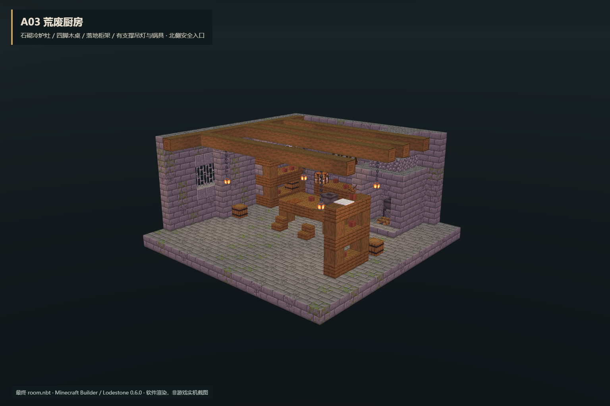
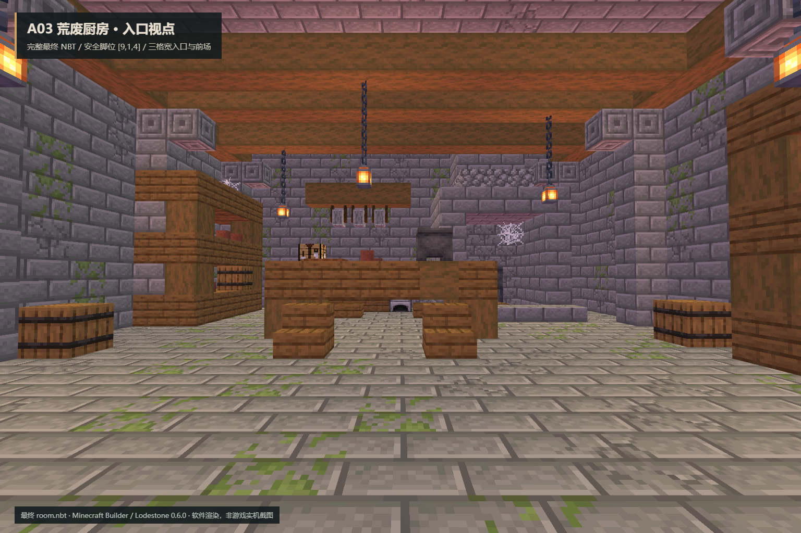

A03 荒废厨房
19 × 11 × 19 · 北入口 [9,1,0] · 内部安全点 [9,1,4]
静态 PASS · Forge 47.4.10 四旋转、八次放置、200 tick PASS · 四向内外视图已检查 · 独立交付，未部署
最终 NBT：99e2c33ebf29feb673fc6677c027a73fe7f7d158102eb37a7a9abdc612666c67

内景显示剖切，保留横梁和灯链；最终 NBT 保留完整屋顶。软件渲染。入口与支撑

完整 NBT 入口视点：横梁接链灯，家具落地；3×4 北入口连接三格宽前场。独立验证范围
209个干燥可达脚位、八个检查点、361格屋顶、五个空方块实体、家具与吊挂支撑均通过；无活动火源、液体或战利品。证据为软件渲染与隔离 Forge GameTest，未做整合包客户端游玩、大厅接通或玩家存档放置。